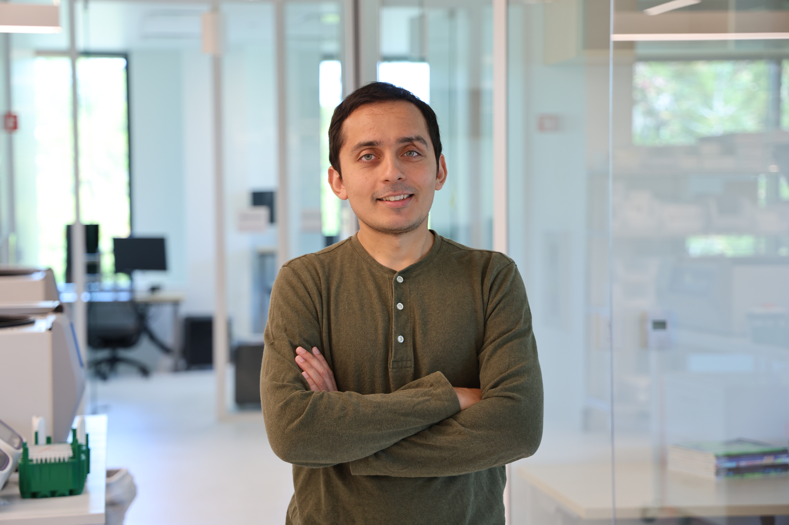

Yusuf Roohani
Yusuf Roohani

About:
I design new machine learning approaches for modeling biological systems, with a particular interest in how artificial intelligence can enhance experiment design for biological discovery. My recent work centers on building closed-loop experimental systems, with a focus on computationally guiding the engineering of cell state.
Most recently, I led the first dedicated machine learning group at the Arc Institute, which I built from scratch and scaled to over 10 people. There we developed an AI model of cell state by pairing model development with AI-guided data generation. I completed my PhD at Stanford Unsversity under the guidance of Jure Leskovec and Stephen Quake. Prior to that, I worked for four years in early stage drug discovery at GSK.
I'm currently building a new approach for closing the loop in biological discovery. It's time to move past scaling data to scaling AI-guided experiments.
yroohani@alumni.stanford.edu
Curriculum Vitae:
[CV]
Featured Publications:
For complete list: Google Scholar
Journal Publications
Cell [2026]
scBaseCount: An AI agent-curated, uniformly processed, and continually expanding single cell data repository
Youngblut, N., Carpenter, C., ... , Goodarzi, H.* and Roohani, Y.*.
Cell [2026]
Predicting cellular responses to perturbation across diverse contexts with STATE
Adduri, A., Gautam, D., Bevilacqua B., ... and Roohani, Y..
[Media coverage] Century of Biology, GEN
[GitHub 600+ Stars]
Nature [2026] Universal Cell Embeddings: A Foundation Model for Cell Biology
Rosen Y.*, Roohani Y.*, Agrawal A., Samotorcan L., Quake S., Leskovec J..
[Media coverage] New York Times
Cell [2025]
Virtual Cell Challenge: Toward a Turing test for the virtual cell
Roohani, Y., Hua, T., ... Goodarzi, H., Burke D..
[Media coverage] GEN, Nature
Cell [2024]
How to Build the Virtual Cell with Artificial Intelligence: Priorities and Opportunities
Bunne, C.*, Roohani, Y.*, Rosen, Y.*, ... Regev, A., Lundberg, E., Lekovec, J., Quake S..
[Media coverage] The Atlantic
Nature Biotechnology [2023]
GEARS: Predicting transcriptional outcomes of novel multi-gene perturbations
Roohani, Y., Huang, K., Leskovec J.
[Best Poster] Intelligent Systems For Molecular Biology (ISMB 2022)
[Innovation Award] Society for Lab Automation and Screening (SLAS 2023)
[GitHub 350+ Stars]
Nature Methods [2023] Towards Universal Cell Embeddings: Integrating Single-cell RNA-seq Datasets across Species with SATURN
Rosen Y.*, Brbic M.*, Roohani, Y.*, Swanson K., Li Z., Leskovec, J..
(* = equal contribution)
Preprints
bioRxiv [2026]
Stack: In-Context Learning of Single-Cell Biology
Dong M., Adduri A., Gautam D., ... and Roohani, Y..
bioRxiv [2024]
PreciCE: Precision engineering of cell fates via data-driven multi-gene control of transcriptional networks
Magnusson, J.*, Roohani, Y.*, Stauber, D., ... Sandberg, R., Lekovec, J., Lei, S. Qi.
Conference Papers
ICLR [2025] BioDiscoveryAgent: An AI agent for designing genetic
perturbation experiments
Roohani Y.*, Vora J.*, Huang Q.*, Steinhart Z., Marson A., Liang P., Leskovec J..
[Best Poster] ICLR 2024 MLGenX Workshop
NeurIPS [2023] Zero-shot causal learning
Nilforoshan H.*, Moor M.*, Roohani Y., Chen Y., Surina A., Yasunaga M., Oblak S., Leskovec J..
[Spotlight Presentation]
Past Research Group Members
- Abhinav Adduri (Arc ML Research Scientist)
- Arshia Nayebnazar (UC Berkeley EECS undergrad student)
- Basak Eraslan (Arc ML, Bioinformatics Senior Scientist)
- Beatrice Bevilacqua (Arc ML Research Scientist)
- Chris Carpenter (Arc Senior Research Assistant)
- Leon Hafner (Arc ML Research Fellow)
- Rishi Verma (Arc ML Engineer)
- Apratim Dey (Stanford Statistics Postdoc)
- Dhruv Gautam (UC Berkeley EECS MS student, now at Engram)
- Yangyi Shen (Stanford CS MS student, now Stanford CS PhD student)
- Mingze Dong (Yale Comp Bio PhD student, now at Stanford)
- Francis Chalissery (Arc ML Research Fellow, now at OpenAI)
- Rohan Shah (UPenn Math undergraduate)
- Alishba Imran (UC Berkeley EECS undergraduate, now at OpenAI)
- Andrew Lee (Stanford CS MS student, now at Need AI)
- Sanjay Nagaraj (Stanford CS MS student, now at Stealth Startup)